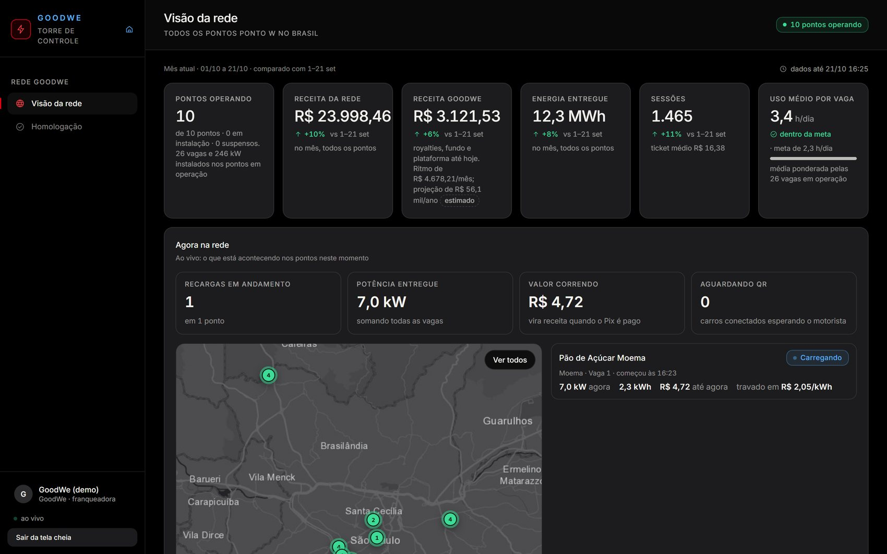
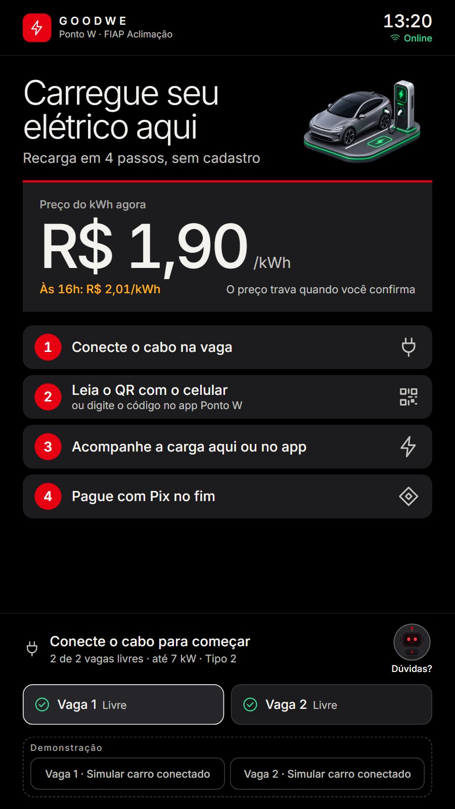
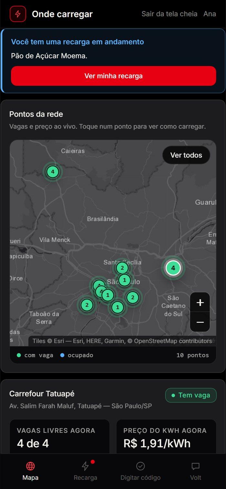
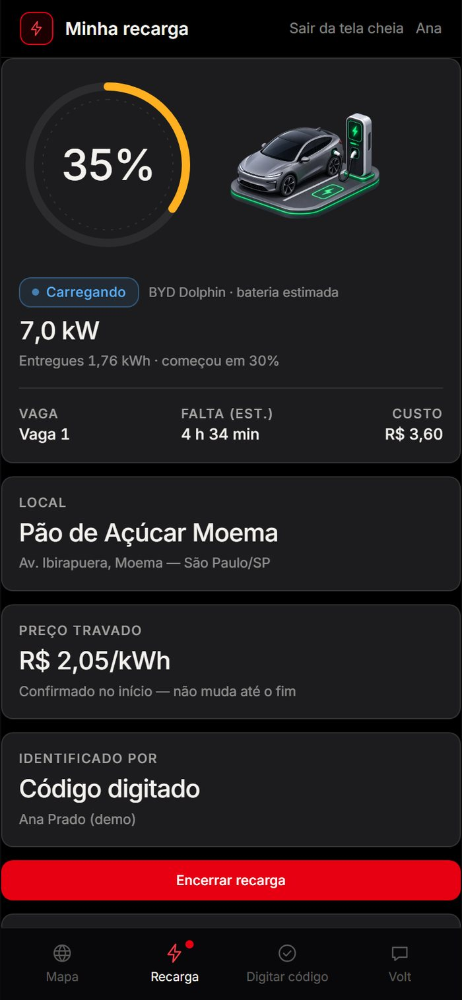
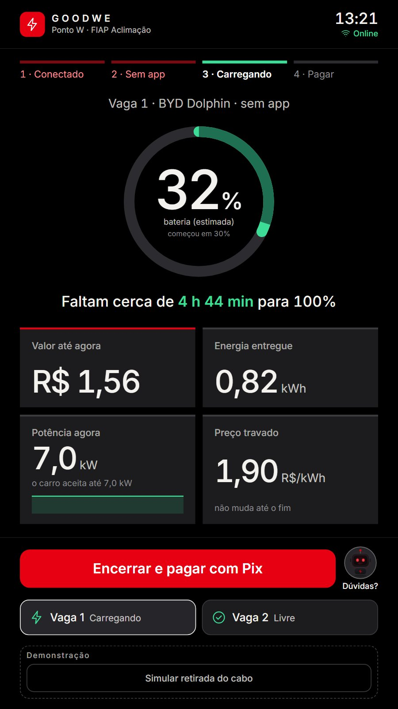
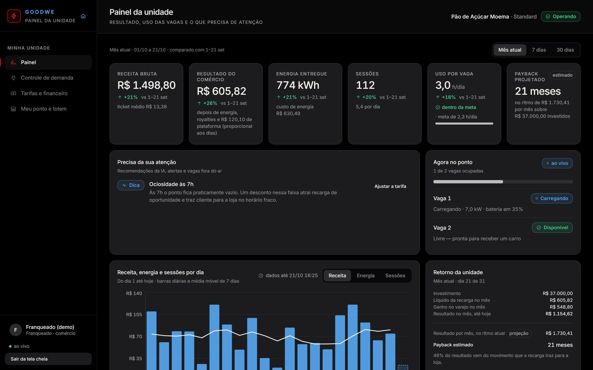
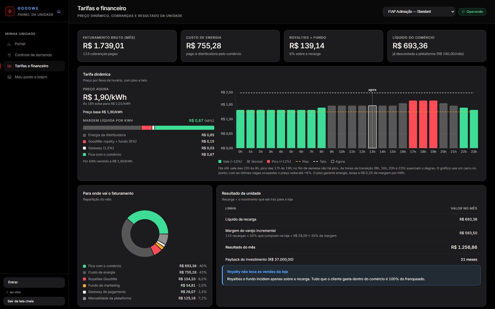
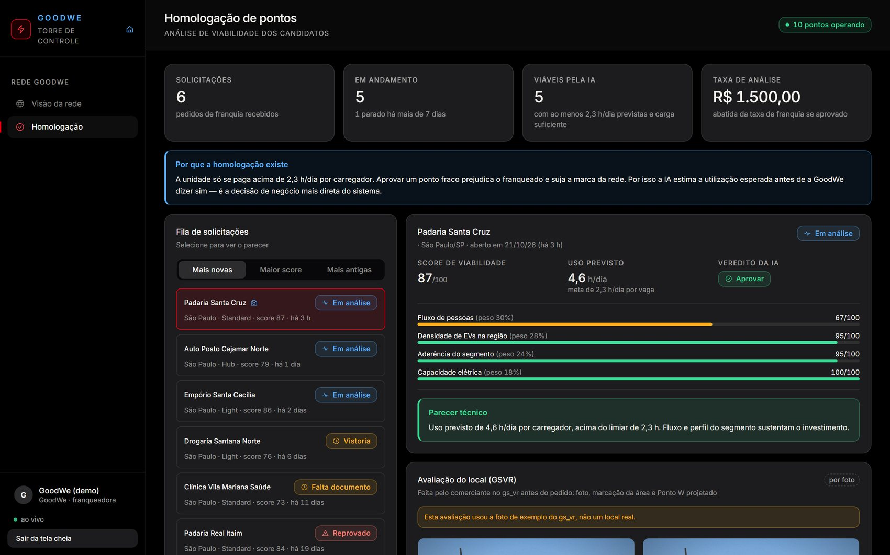
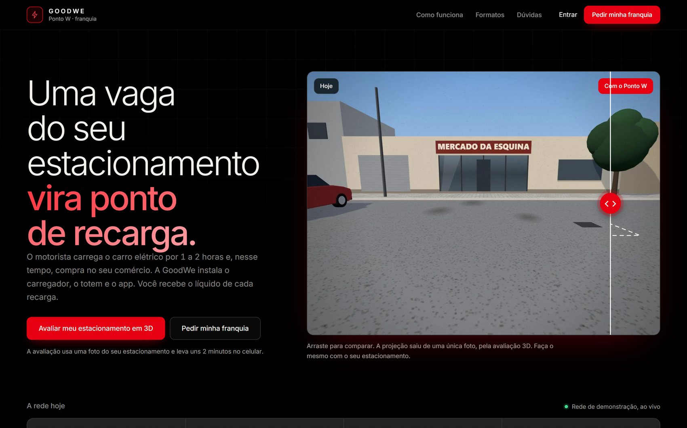
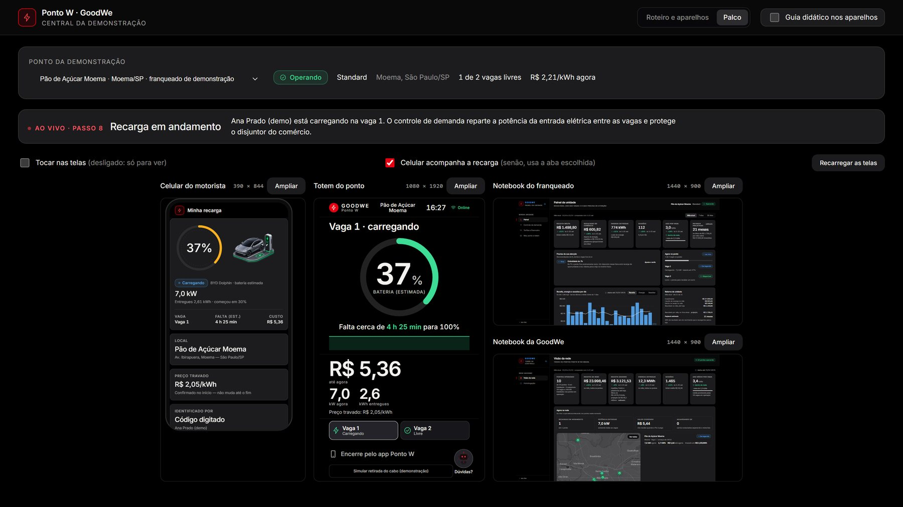

O caminho do pedido de franquia até a recarga paga: o que cada tela faz, como os aparelhos conversam, como sai o preço do kWh e quanto fica com cada um.



O Ponto W transforma uma vaga do estacionamento de um comércio em ponto de recarga de carro elétrico, no modelo de franquia da GoodWe. O motorista carrega por 1 a 2 horas e, nesse tempo, compra na loja. A GoodWe instala o carregador, o totem e a plataforma; o comércio fica com o resultado da recarga e com tudo o que vende.
No celular: acha o ponto, lê o QR do totem, vê o preço travado, acompanha a carga e paga com Pix.
Na vaga: mostra o preço de agora, o QR, a carga ao vivo e o Pix no fim. Funciona sem app.
No notebook: configura o ponto e o preço, acompanha vagas, energia, demanda e o extrato.
No notebook: aprova novos pontos, vê a rede ao vivo e recebe o royalty de cada recarga.
Todo valor em reais deste documento é preço sugerido, calculado pelo próprio sistema e ajustável pela GoodWe (regras da rede) e pelo franqueado (preço base do ponto). A seção 8 mostra as contas e quem pode mudar cada número.
Quatro aparelhos, cada um com um papel, mais a página de franquia e a avaliação 3D. Nenhum aparelho conversa direto com o outro: todos leem e gravam no mesmo banco, e o tempo real do banco avisa cada tela em cerca de um segundo.
Real: as telas, o banco, o tempo real, as contas, o pedido de franquia, a aprovação, o pareamento do totem, o preço travado, a cobrança e a repartição do dinheiro.
Simulado: o carregador físico (o agente faz o papel dele), o carro conectando ("Simular carro conectado") e o pagamento Pix ("Simular pagamento").
Cada ação grava uma linha no banco. Cada tela que precisa daquela informação recebe a mudança pelo tempo real e se redesenha sozinha. Não existe botão "atualizar".
Quando o carregador de verdade da GoodWe entrar, ele toma o lugar do agente simulado e as telas não mudam.
É o fluxograma do produto, do pedido de franquia até a GoodWe receber o royalty. Em cada passo: quem faz, em qual tela e quem enxerga o resultado na hora.
Na página Seja GoodWe, avalia o estacionamento em 3D no GSVR (foto, área marcada, Ponto W projetado, "Enviar avaliação"), volta com as fotos e preenche o pedido. A IA calcula o potencial do local: score e horas de uso por dia.
Abre o pedido, vê o score, as fotos e as medidas da avaliação 3D e a previsão financeira; pede vistoria ou aprova. Ao aprovar, o sistema cria o franqueado, o ponto (em instalação) e as vagas.
Confere nome, endereço e entrada elétrica e define o preço base do kWh. O sistema mostra o preço sugerido da região (R$ 1,90 em São Paulo) e não deixa vender abaixo do custo.
No aparelho do totem abre /totem?tela=cheia&parear=1: aparece um código de 6 dígitos. Em Meu ponto ele digita o código, e o totem passa a mostrar o ponto sozinho. Depois toca em "Ativar ponto".
Mapa real de São Paulo com as vagas livres e o preço de agora de cada ponto. Ao tocar num ponto, vê como carregar ali.
O cabo entra na vaga (na demonstração: "Simular carro conectado" no totem). O agente abre a recarga com um código de 4 letras, válido por 10 minutos, já com o preço travado.
O app mostra o ponto, a vaga e o mesmo preço do totem, com o motivo ("horário de pico +12%", "últimas vagas +8%"). Ele toca em "Iniciar recarga".
A carga roda (10 vezes mais rápida na demonstração). A cada 2 s o agente grava kW, kWh, bateria e R$. O controle de demanda divide a potência entre a loja e os carros sem passar do limite do disjuntor.
O motorista encerra pelo app (no totem, só quem carregou sem app). O agente fecha a conta e cria a cobrança Pix já repartida; o totem mostra o QR do Pix. Pago, o totem mostra o recibo e o carro sai uns 20 s depois.
A recarga entra no extrato com a repartição: energia, royalty, fundo, Pix e o que fica para o comércio.
"Pagas na última meia hora" mostra o valor e a parte da GoodWe; os números do mês, a receita e a projeção sobem.
Passos 1 a 4. Comerciante e GoodWe, em dias ou semanas: pedido, avaliação 3D, aprovação, instalação, totem pareado, ponto ativo.
Passos 5 a 9. Motorista, totem e agente, em 1 a 2 horas: mapa, QR, preço travado, carga ao vivo, Pix.
Passos 10 e 11. Na hora do pagamento: o extrato do franqueado e o royalty da GoodWe já saem repartidos.
Capturas do sistema rodando, com a rede de demonstração no banco. Começa por quem está no estacionamento: o motorista e o totem.

O totem e o celular calculam o preço com a mesma conta. Ao confirmar, o preço fica travado na recarga e é o que vai para o Pix.
No totem, "Sem app? Carregue e pague aqui com Pix": o visitante faz tudo pela tela da vaga.






Mapa real de São Paulo. Cada marcador mostra as vagas livres (verde: com vaga; azul: ocupado; cinza: indisponível). O detalhe do ponto traz o preço de agora e a próxima mudança.
Explica de onde vem o código. Com o código: ponto, vaga, preço travado e "válido até", os motivos do preço, o carro e um limite opcional em R$.
Bateria, kW, kWh, custo e tempo estimado ao vivo. Encerrar, QR do Pix, recibo e "para onde vai o dinheiro".
Assistente por fase da recarga. Só fala de números reais e só promete o que o sistema faz (pagamento só por Pix).
Uma tela por estado, sempre derivada do banco: parear (6 dígitos), espera, reconhecendo o carro, QR e código (10 min), iniciando, carregando, pausada, encerrando, pagar (Pix), pago, código expirado, manutenção, instalação ou suspenso, sem sinal e sem internet. Com duas vagas ou mais, uma faixa de cartões mostra cada vaga.
Período (mês, 7 ou 30 dias) com comparação, receita diária com média de 7 dias, "Agora no ponto" por vaga, "Precisa da sua atenção" e, para ponto novo, o checklist de ativação.
Uso da entrada elétrica (normal até 85%, atenção até 92%, crítico acima), potência permitida por vaga e a carga do comércio ao longo do dia.
Preço por hora do dia com piso e teto, margem líquida por kWh, repartição do mês e a lista de cobranças.
Dados do local, preço base validado contra o sugerido, parear o totem pelo código, ativar o ponto e manutenção das vagas.
"Agora na rede" (recargas em andamento, kW, valor correndo, pagas há pouco), pontos operando, receita e receita GoodWe com projeção, alertas acionáveis e a tabela de pontos.
Pedidos mais novos primeiro, score e parecer da IA, avaliação 3D com fotos, previsão financeira e as decisões (vistoria, aprovar, reprovar).
O fluxograma ao vivo (destaca o passo atual) e os links prontos de cada aparelho.
As 4 telas lado a lado, só leitura, sem trocar o login do navegador.
A sequência de uma recarga, mostrando quem grava e quem fica sabendo. As setas vermelhas são o tempo real avisando as telas.
Cada informação tem dono. A tabela mostra quem escreve cada uma e quem só lê.
| Informação (tabela no banco) | Quem grava | Quem lê |
|---|---|---|
Pedido de franquia homologacoes | Seja GoodWe (cria) e Homologação (decide) | Homologação; o acompanhamento no Seja GoodWe |
Avaliação 3D avaliacoes_local + fotos | GSVR | Seja GoodWe e Homologação |
Ponto e vagas pontos carregadores | Homologação (aprovar cria), Meu ponto (configura, ativa, manutenção), totem (carro no cabo), agente (ocupado ou livre, potência, sinal) | Todas as telas |
Pareamento totens | Totem (gera o código) e Meu ponto (pareia) | Totem e o checklist do franqueado |
Recarga sessoes | Agente (abre, carrega, fecha), celular (confirma, encerra), totem (visitante) | Totem, celular, franqueado, GoodWe |
Telemetria telemetria | Agente | Curvas no app, no totem e no franqueado |
Cobrança cobrancas | Agente (cria, já repartida) e celular ou totem (paga) | Financeiro do franqueado e a GoodWe |
Perfil e papel perfis | Cadastro e a aprovação (vira franqueado) | O app inteiro (menu e permissões ao vivo) |
Rastreio eventos | Todas as ações importantes | Auditoria |
A recarga (sessão) passa por estados fixos. Cada tela olha o estado e decide o que mostrar.
| Estado | O totem mostra | O celular mostra |
|---|---|---|
| ABERTA | QR grande, código e a contagem dos 10 minutos | A recarga encontrada pelo código, com o preço travado |
| AUTENTICADO | "Tudo certo! Liberando a energia" | Recarga começando |
| CARREGANDO · PAUSADO | Bateria, kW, kWh, R$ e tempo para 100%; na pausa, o motivo | O mesmo, com "Encerrar recarga" |
| CONCLUIDO | QR do Pix e o valor | QR do Pix e "Simular pagamento" |
| FATURADO | Recibo e "pode desconectar" | Recibo e a repartição do dinheiro |
| EXPIRADA | "O código expirou. Desconecte e conecte de novo." | "Esse código não está ativo" |
O estado mora no banco, não na tela. Se o celular fechar ou a página recarregar no meio da carga, a tela volta exatamente onde estava.
O franqueado define o preço base. O sistema ajusta o preço de cada hora sozinho, sempre dentro de limites, e o motorista vê o preço travado antes de começar.
Vale (22h às 8h): −10%
Normal: o preço base
Pico (17h às 19h, dias úteis): +12%
No máximo 10% de diferença de uma hora para a outra.
Ponto com 2 vagas ou mais: até +8% quando o motorista pega uma das últimas vagas (mais da metade ocupada, contando ele).
Piso: 85% da base e nunca abaixo de energia + taxas + R$ 0,20.
Teto: 130% da base.
O preço do QR vale 10 minutos e é o que vai para o Pix.
Preço base R$ 1,90/kWh
Preço base R$ 1,90/kWh
Horário de pico (+12%) +R$ 0,23
Preço base R$ 1,90/kWh
Horário de pico (+12%) +R$ 0,23
Últimas vagas (+8%) +R$ 0,17
O preço que o motorista confirma fica travado por 10 minutos e vai inteiro para a cobrança.
As contas desta seção saem das mesmas funções que o app usa no totem, na cobrança e no simulador da franquia. Todo valor é sugerido: a GoodWe ajusta as regras da rede e o franqueado ajusta o preço base do ponto.
| Custo da energia em São Paulo, com impostos (premissa por região) | R$ 0,85 /kWh |
| Margem alvo do comércio por kWh | R$ 0,85 /kWh |
| Taxas sobre o valor cobrado: royalty 6% + fundo 2% + Pix 1,5% | 9,5% |
| Conta: (0,85 + 0,85) ÷ (1 − 0,095), arredondado de R$ 0,05 em R$ 0,05 | R$ 1,88 → R$ 1,90 |
| Preço base sugerido em São Paulo sugerido · ajustável | R$ 1,90 /kWh |
| Menor preço base aceito: (0,85 + 0,20) ÷ (1 − 0,095) | R$ 1,17 /kWh |
| Momento | Preço do kWh | Fica com o comércio | Margem |
|---|---|---|---|
| Vale (madrugada) | R$ 1,71 | R$ 0,69 | 40% |
| Normal | R$ 1,90 | R$ 0,87 | 46% |
| Pico (17h às 19h) | R$ 2,13 | R$ 1,08 | 51% |
| Pico, na última vaga livre | R$ 2,30 | R$ 1,24 | 54% |
| Piso do ponto (85% da base) | R$ 1,62 | R$ 0,62 | 38% |
| Menor preço base aceito | R$ 1,17 | R$ 0,21 | 18% |
O preço nunca fica abaixo do custo: no pior caso, o comércio ainda leva a margem mínima de R$ 0,20 por kWh, já descontados a energia, o royalty, o fundo e o Pix.
Duas recargas com o preço sugerido de R$ 1,90 por kWh: a média da rede de demonstração e uma recarga grande, de um BYD Dolphin indo de 20% a 80% da bateria.
| Recarga média | Dolphin 20% → 80% | |
|---|---|---|
| Energia entregue | 8,36 kWh | 26,94 kWh |
| Tempo parado no comércio | ~1 h 15 min | ~4 h a 7 kW |
| O motorista paga | R$ 15,88 | R$ 51,19 |
| (−) Energia | R$ 7,11 | R$ 22,90 |
| (−) Royalty GoodWe 6% | R$ 0,95 | R$ 3,07 |
| (−) Fundo de marketing 2% | R$ 0,32 | R$ 1,02 |
| (−) Tarifa do Pix 1,5% | R$ 0,24 | R$ 0,77 |
| Fica com o comércio, só da recarga | R$ 7,26 | R$ 23,43 |
| + Margem média na loja (premissa, abaixo) | R$ 4,90 | R$ 4,90 |
| Ganho do comércio por recarga | R$ 12,16 | R$ 28,33 |
A repartição é a função repartir do app, a mesma que gera a cobrança de cada recarga. A margem na loja usa as premissas do modelo: metade dos motoristas compra (50%), o ticket médio é R$ 28 e a margem do varejo é 35%; 0,5 × 28 × 0,35 = R$ 4,90.
Cenário típico: cada vaga usada 3,5 horas por dia, 30 dias, preço base sugerido de R$ 1,90. A conta é a mesma previsão que o app mostra na homologação e no ponto em instalação.
| Light · 1 vaga 7 kW | Standard · 2 vagas 7 kW | Hub · 4 vagas 11 kW | |
|---|---|---|---|
| Investimento sugerido · ajustável | R$ 20.500 | R$ 37.000 | R$ 78.500 |
| Taxa de franquia sugerido · ajustável | R$ 8.000 | R$ 14.000 | R$ 24.000 |
| Por mês | |||
| Energia entregue | 704 kWh | 1.407 kWh | 2.814 kWh |
| Recargas | 84 | 168 | 337 |
| Faturamento da recarga | R$ 1.337 | R$ 2.673 | R$ 5.347 |
| (−) Energia | R$ 598 | R$ 1.196 | R$ 2.392 |
| (−) Royalty 6% + fundo 2% | R$ 107 | R$ 214 | R$ 428 |
| (−) Tarifa do Pix 1,5% | R$ 20 | R$ 40 | R$ 80 |
| (−) Mensalidade da plataforma sugerido · ajustável | R$ 180 | R$ 180 | R$ 180 |
| Sobra da recarga | R$ 432 | R$ 1.043 | R$ 2.267 |
| + Margem na loja (premissa) | R$ 412 | R$ 825 | R$ 1.649 |
| Resultado do comércio | R$ 844 | R$ 1.868 | R$ 3.916 |
| Retorno | |||
| Do investimento | 24 meses | 20 meses | 20 meses |
| Do investimento + taxa de franquia | 34 meses | 27 meses | 26 meses |
Valores arredondados ao real; a soma de uma coluna pode diferir em R$ 1. Energia por hora de recarga (6,7 kWh) e por recarga (8,4 kWh) são as médias da rede de demonstração.
| Light | Standard | Hub | |
|---|---|---|---|
| Royalty 6% por mês | R$ 80 | R$ 160 | R$ 321 |
| Mensalidade da plataforma | R$ 180 | R$ 180 | R$ 180 |
| Receita recorrente da GoodWe por mês | R$ 260 | R$ 340 | R$ 501 |
| Fundo de marketing 2% (vai para a divulgação da rede) | R$ 27 | R$ 53 | R$ 107 |
| Taxa de franquia, uma vez | R$ 8.000 | R$ 14.000 | R$ 24.000 |
Fora da conta: a venda do carregador e do totem GoodWe, que compõem o investimento.
O número que mais pesa é o uso de cada vaga. Por isso a homologação só aprova locais com previsão de pelo menos 2,3 horas por dia por vaga.
| Uso por vaga | Light | Standard | Hub |
|---|---|---|---|
| 2,3 h/dia (mínimo da homologação) | R$ 493 · 42 meses | R$ 1.166 · 32 meses | R$ 2.512 · 31 meses |
| 3,5 h/dia (cenário típico) | R$ 844 · 24 meses | R$ 1.868 · 20 meses | R$ 3.916 · 20 meses |
| 5,0 h/dia (ponto forte) | R$ 1.283 · 16 meses | R$ 2.746 · 14 meses | R$ 5.672 · 14 meses |
Resultado do comércio por mês · retorno do investimento, com o preço base sugerido de R$ 1,90.
| Valor | Hoje (sugerido) | Quem ajusta e como |
|---|---|---|
| Preço base do kWh do ponto | R$ 1,90 em SP | Franqueado, em Meu ponto. O app recusa abaixo do custo (R$ 1,17 em SP) e acima do dobro do sugerido, e avisa quando fica abaixo do sugerido. |
| Faixas de horário, últimas vagas, piso e teto | −10% / +12% / +8% / 85% / 130% | GoodWe, nas regras da rede. No MVP elas ficam num arquivo só (catalogo.ts); mudar um número muda junto o totem, o celular, a cobrança, a homologação e o simulador da franquia. |
| Royalty, fundo e mensalidade da plataforma | 6% / 2% / R$ 180 | |
| Investimento e taxa de franquia por formato | tabela da página anterior | |
| Tarifa do Pix | 1,5% | Depende do contrato com o meio de pagamento (no MVP o Pix é simulado). |
Cada tela tem um endereço próprio. No site publicado (GitHub Pages) todos começam com https://jbelkior1.github.io/gs_goodwe; em desenvolvimento, com http://localhost:5191.
| URL | Tela | O que faz | Login |
|---|---|---|---|
| Público | |||
/ | Portal | Porta de entrada: escolhe o papel (motorista, totem, franqueado, GoodWe) e leva à franquia. | Não |
/seja-goodwe | Seja GoodWe | Página da franquia + avaliação 3D + pedido + acompanhamento. | Para enviar |
/entrar | Entrar | Entrar ou criar conta (motorista ou comércio). Contas de demonstração em um toque. | — |
GSVR jbelkior1.github.io/gs_vr | Avaliação 3D | Outro site: foto, área marcada, Ponto W projetado, "cabe ou não", envio para a GoodWe. | Não |
| Motorista (celular) | |||
/motorista | Mapa | Pontos no mapa, vagas livres, preço de agora e como carregar. | Não |
/motorista/vincular | Digitar código | Confirma a recarga pelo código do totem (o QR já traz ?c=CODIGO) e mostra o preço travado. | Sim |
/motorista/recarga | Minha recarga | Carga ao vivo, encerrar, Pix, recibo. | Sim |
/motorista/assistente | Volt | Assistente que responde dúvidas com os números da recarga em andamento. | Não |
| Totem (tablet ou monitor no ponto) | |||
/totem?tela=cheia&parear=1 | Totem novo | Mostra o código de 6 dígitos para parear. Na demonstração, sem esse parâmetro, o totem já abre no ponto da apresentação. | Não |
/totem?ponto=p-011&tela=cheia | Totem do ponto | Quiosque do ponto: espera, QR, carga, Pix, recibo. Lembra o ponto depois da primeira vez. | Não |
| Franqueado (notebook) | |||
/franqueado | Painel | Receita, resultado, uso por vaga, "Agora no ponto", "Precisa da sua atenção", checklist de ativação. | Sim* |
/franqueado/demanda | Controle de demanda | Entrada elétrica ao vivo e a potência de cada vaga. | Sim* |
/franqueado/financeiro | Tarifas e financeiro | Tarifa do dia, margem por kWh, para onde vai o dinheiro, cobranças. | Sim* |
/franqueado/ponto | Meu ponto e totem | Configuração, preço base, parear o totem, ativar, manutenção. | Sim* |
| URL | Tela | O que faz | Login |
|---|---|---|---|
| GoodWe (notebook) | |||
/goodwe | Visão da rede | "Agora na rede", números do mês, alertas, mapa e tabela de pontos. | Sim* |
/goodwe/homologacao | Homologação | Fila de pedidos com score da IA e avaliação 3D; aprovar, vistoria ou reprovar. | Sim* |
| Demonstração | |||
/demo | Central | Fluxograma ao vivo e os links de cada aparelho. | Não |
/demo?vista=palco | Palco | As 4 telas lado a lado, ao vivo, numa tela só. | Não |
* Em tela cheia o painel exige a conta daquele papel. Na vitrine (modo demonstração) dá para ver sem login.
| Parâmetro | Onde | Efeito |
|---|---|---|
tela=cheia · tela=vitrine | qualquer área | Tela cheia: só o ambiente do papel, como no aparelho real. Vitrine: com a barra de todos os papéis. Fica lembrado no aparelho. |
conta=goodwe|franqueado|motorista|comerciante | qualquer área (demo) | Entra sozinho com a conta de demonstração e some da URL. |
ponto=p-011 | totem, franqueado | Escolhe o ponto. No totem, fica gravado como o ponto daquele aparelho. |
parear=1 | totem | Mostra o pareamento por código. Sem ele, o totem da demonstração abre direto no ponto da apresentação. |
guia=1 · guia=0 | qualquer área (demo) | Liga ou desliga o guia didático ("Passo N · o que está acontecendo"). |
modo=vertical|horizontal|auto | totem | Orientação do quiosque (1080×1920 ou 1920×1080). |
c=YRJY | /motorista/vincular | Código da recarga (vem no QR do totem). |
volta=/caminho | /entrar | Para onde voltar depois de entrar. |
modo=cadastro&tipo=comercio | /entrar | Abre direto o cadastro de comércio. |
avaliacao=av-… | /seja-goodwe | Volta do GSVR com a avaliação (fotos e medidas) para anexar ao pedido. |
solicitacao=h-… | /goodwe/homologacao | Abre um pedido específico. |
embed=1 | usado pelo Palco | Tela embutida, só leitura, sem trocar o login do navegador. |
Cada origem do navegador guarda o seu próprio login. Por isso, num notebook só, dá para ter GoodWe, franqueado e totem logados ao mesmo tempo usando endereços como goodwe.localhost e totem.localhost.
Um celular, dois notebooks e um totem. Cada aparelho abre o seu link uma vez; o ponto da demonstração é a FIAP Aclimação (p-011). Todos os endereços começam com https://jbelkior1.github.io/gs_goodwe.
| Celular · motorista | /motorista?tela=cheia&conta=motorista |
| Totem · pareamento | /totem?tela=cheia&parear=1 (só para mostrar o código de 6 dígitos) |
| Totem · direto no ponto | /totem?ponto=p-011&tela=cheia |
| Notebook · franqueado | /franqueado?ponto=p-011&tela=cheia&conta=franqueado |
| Notebook · GoodWe | /goodwe?tela=cheia&conta=goodwe |
| Tudo numa tela | /demo?vista=palco |
| Comerciante | /seja-goodwe?conta=comerciante |
Nenhum aparelho precisa de conta. No modo demonstração o totem já abre na FIAP Aclimação, o celular confirma a recarga sem login e os painéis do franqueado e da GoodWe abrem direto. Acrescente &guia=1 em qualquer link para mostrar a faixa didática com o passo do fluxograma.
| # | Aparelho | O que fazer e o que mostrar |
|---|---|---|
| 1 | Notebook GoodWe | Visão da rede: 11 pontos em São Paulo, receita do mês, "Agora na rede" vazio. |
| 2 | Totem | Tela de espera: preço do kWh agora e o porquê, próximo preço, passo a passo. |
| 3 | Totem | "Simular carro conectado" → QR e código. No franqueado: "aguardando o motorista ler o QR". |
| 4 | Celular | Digitar o código → preço travado igual ao do totem → Iniciar recarga. |
| 5 | Os quatro | Carga ao vivo: celular, totem, "Agora no ponto" e "Agora na rede" subindo juntos. |
| 6 | Celular → totem | Encerrar → Pix → Simular pagamento → recibo no totem. |
| 7 | Franqueado → GoodWe | Extrato com a repartição; a GoodWe recebe a parte dela em "Pagas na última meia hora". |
| 8 | Comerciante | (Opcional, entrando com a conta comerciante@) Seja GoodWe → avaliação 3D → pedido → aprovar na Homologação. |
https://jbelkior1.github.io/gs_goodwe, com a avaliação 3D em https://jbelkior1.github.io/gs_vr.npm run simulador. Ele faz o papel do carregador e precisa ficar rodando o tempo todo (usa a chave secreta do .env.local, que nunca vai para o site)./demo.npm run dev:rede) e use o IP dele, com VITE_URL_PUBLICA=http://<IP>:5191 no .env.local.| Comando | O que faz |
|---|---|
npm run demo:comerciante | Volta a conta do comerciante ao início (apaga só o que ela criou: pedido, ponto, vagas, recargas). |
npm run demo:fiap | Recoloca só o ponto da apresentação (FIAP Aclimação) com o histórico dele, sem mexer no resto da rede. |
npm run demo:atualizar | Traz o histórico de demonstração para perto de hoje (os gráficos não ficam vazios). |
npm run seed -- --limpar | Refaz a rede inteira (11 pontos em São Paulo com 90 dias de histórico). Apaga também os pedidos de franquia. |
| Conta | Papel |
|---|---|
goodwe@pontow.app | GoodWe (franqueadora) |
franqueado@pontow.app | Franqueado da FIAP Aclimação (p-011) |
motorista@pontow.app | Motorista (Ana Prado) |
comerciante@pontow.app | Comércio que ainda vai pedir a franquia |
A senha das contas não fica no site publicado nem neste documento, e a demonstração não precisa dela: os links abrem sem conta. As contas servem para quem quiser entrar com login (por exemplo, o comerciante que envia o pedido). Os nomes de marcas da rede (Graal, Pão de Açúcar, Carrefour…) são dados de demonstração, sem parceria.
| Ponto | O comércio franqueado com seus carregadores (ex.: FIAP Aclimação). |
| Vaga | Cada carregador do ponto. Light tem 1, Standard 2 e Hub 4. |
| Totem | A tela no ponto (tablet ou monitor) que mostra o preço, o QR, a carga e o Pix. |
| Agente do ponto | O programa que conversa com o carregador. No MVP é o simulador. |
| Sessão | Uma recarga, do carro conectar até o pagamento. |
| Código | As 4 letras que o totem mostra quando o carro conecta; valem 10 minutos. |
| Preço base | O preço do kWh que o franqueado define; o sistema sugere R$ 1,90 em São Paulo. |
| Preço travado | O preço do kWh que o motorista aceitou; não muda até o fim da recarga. |
| Piso e teto | Os limites do preço de cada hora: nunca abaixo do custo com margem mínima, nunca acima de 130% da base. |
| Cobrança | O Pix gerado no fim da recarga, já com a repartição. |
| Repartição | A divisão do valor pago: energia, royalty 6%, fundo 2%, Pix 1,5% e o que fica com o comércio. |
| Royalty | A parte da GoodWe, só sobre a recarga, nunca sobre as vendas da loja. |
| Controle de demanda | Divide a potência entre a loja e os carros sem passar do limite do disjuntor. |
| Pareamento | Ligar um totem a um ponto pelo código de 6 dígitos. |
| Homologação | A análise da GoodWe sobre um pedido de franquia (score, vistoria, aprovação). |
| Uso por vaga | Horas por dia em que cada carregador está carregando; a meta mínima é 2,3 h. |
| GSVR | O site de avaliação 3D do local por foto (repositório gs_vr). |
| Tempo real | O recurso do banco que avisa as telas quando algo muda. |
| Vitrine e tela cheia | Vitrine: todos os papéis numa tela para demonstrar. Tela cheia: só o ambiente de um papel, como no aparelho real. |